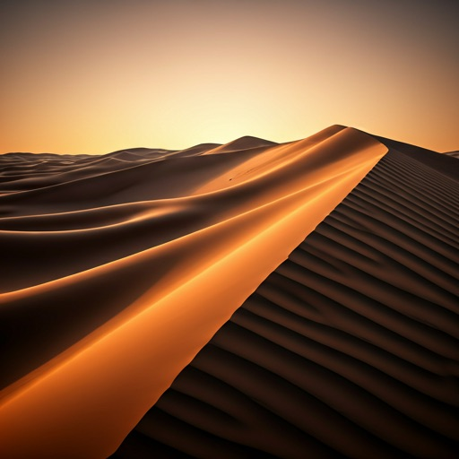
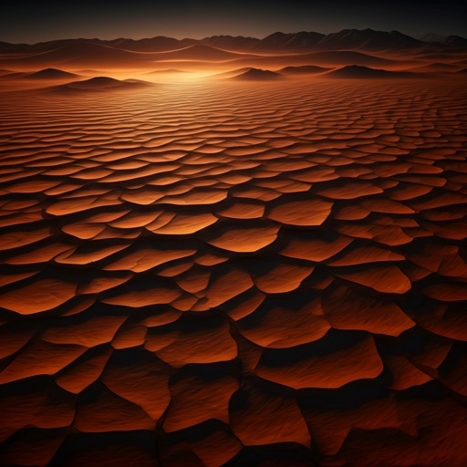
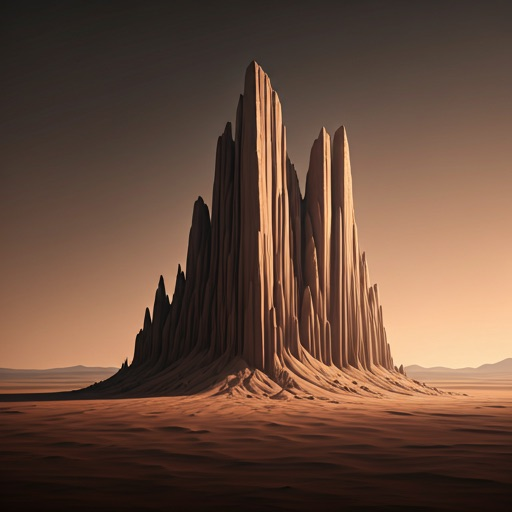
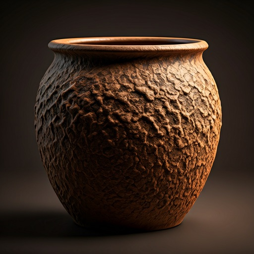
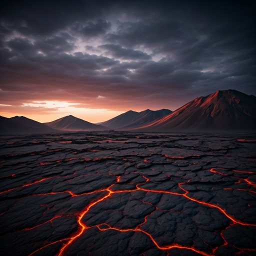

The Earthy Soul
A sensory-rich journey into natural skeuomorphism. Grounded in terracotta palettes, tactile grain, and the silent weight of ancient rock formations.
Tactile Minimialism
Our Earthy mode prioritizes the "Digital Serenity" of sun-baked landscapes. Every interface element is etched with subtle sand-grain textures and global illumination cues.

Silt & Sediments

Monolithic Silence

Fired Clay

Igneous Flow
"Nature doesn't have borders; it has transitions. Our interface reflects the settling of dust and the permanence of stone."— Dr. Aris Thorne, Lead Curator
Wabi-Sabi Geologies
In the Earthy mode, we embrace the beauty of imperfection. Our design tokens are inspired by arid environments where survival dictates simplicity. Notice the 1px "top-light" strokes on cards that simulate the way sun hits the edge of a canyon wall.
-
texture
Granular Depth
Surfaces use tonal depth shifts and 5% opacity sand-grain overlays for a physical presence.
-
landscape
Breathing Grid
Asymmetrical placement mimics the organic growth of desert flora and rock erosion.
Join the Lab
Receive weekly dispatches on natural skeuomorphism and the evolution of sensory-rich digital interfaces.